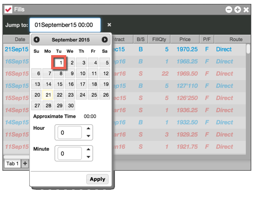
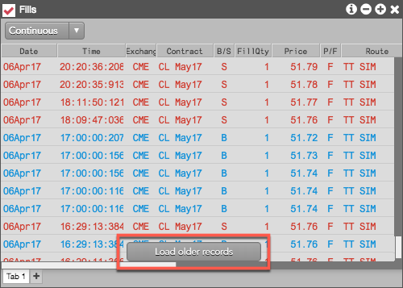

You can also view data from any date and time in the history of the account. Simply right-click in the widget and select Go to date from the context menu.

When the Fills widget is in "Continuous Mode", scrolling to the bottom of the list may display the Load older records button. You can click this button to retrieve the next batch of fills data in chronological order.
